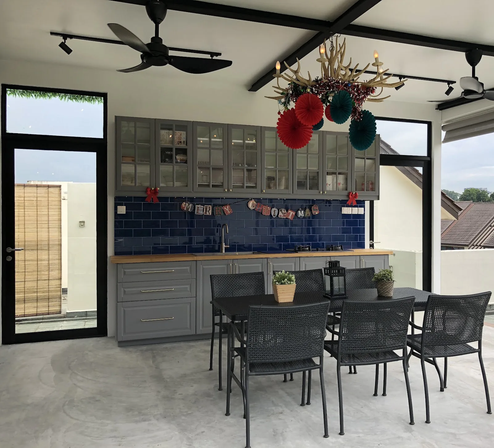

Stevens · Completed
Terrace Apartment
- Location
- Stevens
- Typology
- 3-bedroom condominium with roof terrace
- Area
- 250 m²
- Scope
- Interior
- Status
- Completed
The roof terrace was the reason for the whole project. It had the space for a proper outdoor kitchen, and a family who would actually use it several times a week.
Indoors, the plan was rebalanced around gathering: a generous dining table at the centre, and storage that keeps the everyday clutter of a busy household out of sight.